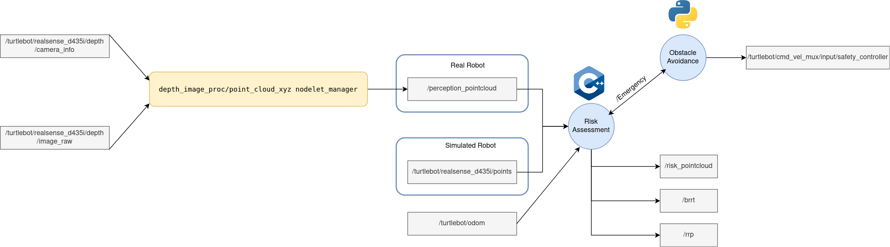
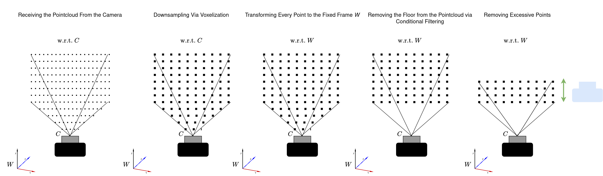
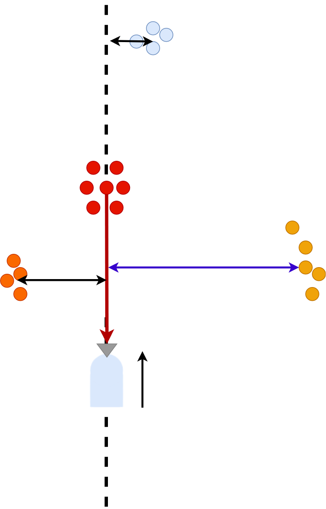

Implementation: Collision Risk Assessment
The present implementation makes use of the PCL library to process the pointcloud resulting from the depth measurements from an intel Realsense D435i RGB-D camera. The implementation relies purely on the measurements from the sensor since the robot is teleoperated for the persent imeplementation. Whenever the robot is moving on the direction towards an obstacle with high risk, a safety controller disables the control commands comming from teleoperation and guides the robot towards a zone with lower risk (in the video the controller takes the robot to the green cylinder, the red arrow is the obstacle with largest risk and the blue arrow is the obstacle with lower risk). This is done merely because the only information about the enironment is the one given from the RGB-D camera and no mapping process is happening. The ROS architecture is shown in below.
The filtering process was greatly facilitated by the PCL library, the pipeline followed before computing the collision risk to all of the points in the pointcloud is shown in the following image below.
The safe positioning of the robot is basde on the largest distance from the robot's current trayectory and the other remaining obstacles as shown in the following image below, where the best way to take is the steer the robot automatically towards the obstacle that is the furthest away, as shown in the image below (the best direction to take is towards the obstacle pointed by the blue arrow).
